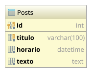

Esta é uma revisão para a segunda prova.
Crie uma aplicação chamada MiniBlog que tenha as seguintes características:
A aplicação deve ser desenvolvida usando o framework MVC discutido em sala de aula.
Os posts serão adicionados tabela Posts:
|  | {% highlight sql %}{% include_relative un2/create-posts.sql %}{% endhighlight %} |
As classes de acesso a dados Post e PostDao já estão criadas e prontas para uso:
Adicione um novo recurso ao MiniBlog, permita que um post só seja publicado na data e hora informada pelo usuário.
Nesse caso, antes da data informada, o novo post não irá aparecer na lista, nem poderá ser acessado diretamente usando a URL.